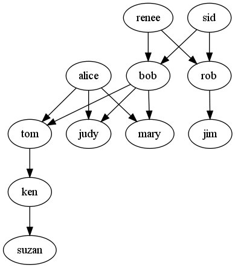

Slovarji in množice
Contents
2. Slovarji in množice#
Najprej si prenesi predlogo za reševanje, jo ekstrahiraj in odpri v najljubšem IDEju.
Rešitve nalog:
resitve-inventar.py
resitve-najpogostejse.py
resitve-druzinsko-drevo.py
2.1. Inventar#
Neka trgovina shranjuje svoj inventar v slovarju, katerega ključi so artikli in vrednosti količine:
inv = {'sir': 8, 'kruh': 15, 'makovka': 10, 'pasja radost': 2, 'pašteta': 10, 'mortadela': 4, 'klobasa': 7}
Pazi: vrednosti so števila (npr. 10) in ne nizi (“10”).
2.1.1. Zaloga#
Napišite funkcijo zaloga(inventar, artikel) naj pove, koliko izdelka artikel imamo na zalogi. Če bi imeli gornji slovar z inventarjem shranjen v slovarju inv, mora klic zaloga(inv, "makovka") vrniti 10.
>>> zaloga(inv, "makovka")
10
2.1.2. Prodaj#
Napišite funkcijo prodaj(inventar, artikel, kolicina), ki zmanjša količino artikla artikel v inventarju inventar za kolicina. Klic prodaj(inv, "makovka", 3) (prodali smo tri makovke) mora spremeniti slovar inv tako, da zmanjša vrednost pri ključu “makovke” za 3. Funkcija ne vrača ničesar.
>>> inv
{'sir': 8, 'kruh': 15, 'makovka': 10, 'pasja radost': 2, 'pašteta': 10, 'mortadela': 4, 'klobasa': 7}
>>> prodaj(inv, "makovka", 3)
>>> inv
{'sir': 8, 'kruh': 15, 'makovka': 7, 'pasja radost': 2, 'pašteta': 10, 'mortadela': 4, 'klobasa': 7}
Nasvet: če veš preveč in si že slišal za argumente po vrednosti in po referenci, te misli do nadaljnjega opusti, saj za Python niso relevantne.
2.1.3. Primanjkljaj#
Napišite funkcijo primanjkljaj(inventar, narocilo), ki prejme dva slovarja: prvi predstavlja trenutni inventar, drugi pa, kaj neka stranka naroča; naročilo je predstavljeno s slovarjem enake oblike kot inventar. Funkcija mora vrniti nov slovar, v katerem bo zapisano, koliko česa moramo še kupiti, da bomo lahko stranki dobavili vse, kar si želi. Če bi, recimo, stranka želela tri paštete, devet klobas in eno pivo, mora funkcija vrniti slovar {"klobasa": 2, "pivo": 1}. Dve klobasi zato, ker jih imamo sedem, stranka pa jih želi devet. Paštet ne bo potrebno naročati, saj jih imamo dovolj. Pivo pa potrebujemo, saj nimamo nobenega.
>>> primanjkljaj(inv, {"pašteta": 3, "klobasa": 9, "pivo": 1})
{"klobasa": 2, "pivo": 1}
2.2. Najpogostejše#
2.2.1. Freq#
Napišite pomožno funkcijo freq(s), ki sestavi in vrne slovar pogostosti črk v nizu s.
>>> freq("abcaad")
{'a': 3, 'b': 1, 'c': 1, 'd': 1}
2.2.2. Max freq#
Napišite pomožno funkcijo max_freq(f), ki vrne ključ v slovarju f z največjo shranjeno vrednostjo.
>>> max_freq({'a': 3, 'b': 1, 'c': 1, 'd': 1})
'a'
2.2.3. Najpogostejse#
Napišite funkcijo najpogostejse(s), ki vrne besedo in znak, ki se v podanem nizu največkrat pojavita. V nizu ‘in to in ono in to smo mi’ se največkrat pojavita beseda ‘in’ in znak ‘ ‘ (presledek).
>>> najpogostejse('aa bb aa')
('aa', 'a')
>>> najpogostejse('in to in ono in to smo mi')
('in', ' ')
2.2.4. Najpogostejse urejene#
Tisti, ki se ob teh nalogah dolgočasijo, naj napišejo še funkcijo najpogostejse_urejene, ki vrne vse besede in črke, ki se v podanem nizu pojavijo, urejene po številu pojavitev (besede in črke z enakim številom pojavitev uredite po abecednem vrstnem redu).
>>> najpogostejse_urejene('aa bb aa')
(['aa', 'bb'], ['a', ' ', 'b'])
>>> najpogostejse_urejene('in to in ono in to smo mi')
(['in', 'to', 'mi', 'ono', 'smo'], [' ', 'o', 'i', 'n', 'm', 't', 's'])
2.3. Družinsko drevo#
V seznamu family je spravljeno družinsko drevo:
family = [('bob', 'mary'), ('bob', 'tom'), ('bob', 'judy'), ('alice', 'mary'),
('alice', 'tom'), ('alice', 'judy'), ('renee', 'rob'), ('renee', 'bob'),
('sid', 'rob'), ('sid', 'bob'), ('tom', 'ken'), ('ken', 'suzan'), ('rob', 'jim')]
V vsaki terki sta zapisani dve imeni: ime starša in ime otroka. Terka ('bob', 'mary') nam pove, da je Bob Maryjin oče, terka ('bob', 'tom') pa, da je Bob Tomov oče, itd.

2.3.1. Family tree#
Napišite funkcijo family_tree(family), ki sprejeme seznam v kateri je spravljeno družinsko drevo in vrne slovar v katerem je za vsakega starša spravljen seznam vseh njegovih otrok.
>>> family_tree(family)
{'renee': ['rob', 'bob'], 'ken': ['suzan'], 'rob': ['jim'], 'sid': ['rob', 'bob'], ... , 'bob': ['mary', 'tom', 'judy']}
2.3.2. Children#
Napišite funkcijo children(tree, name), ki v družinskem drevesu tree vrne seznam vseh otrok osebe. V primeru, da oseba nima otrok vrnite prazen seznam.
>>> tree = family_tree(family)
>>> children(tree, 'alice')
['mary', 'tom', 'judy']
>>> children(tree, 'mary')
[]
2.3.3. Grandchildren#
Napišite funkcijo grandchildren(tree, name), ki vrne seznam vseh vnukov in vnukinj osebe.
>>> grandchildren(tree, 'renee')
['jim', 'mary', 'tom', 'judy']
2.3.4. Successors (zahtevnejsa)#
Naslednja funkcija je malo zahtevnejša od ostalih, zato jo lahko preskočite. Napišite funkcijo successors(tree, name), ki vrne seznam vseh naslednikov osebe.
>>> successors(tree, 'tom')
['ken', 'suzan']
>>> successors(tree, 'sid')
['rob', 'bob', 'jim', 'mary', 'tom', 'judy', 'ken', 'suzan']